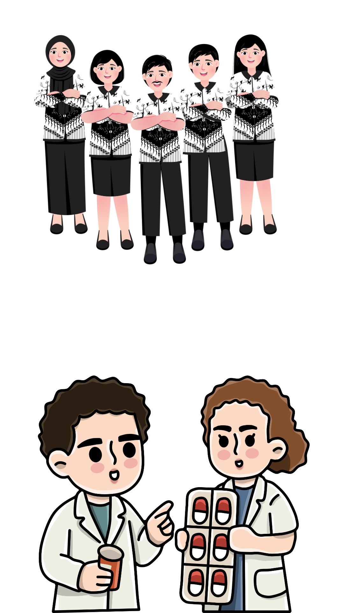

Selamat Datang di Website Layanan Informasi & Aspirasi Mahasiswa
Website ini dibuat untuk memberikan informasi tentang kampus, serta sebagai wadah bagi mahasiswa Universitas Muhammadiyah Kuningan untuk menyampaikan aspirasi, kritik, dan saran.
Universitas Muhammadiyah Kuningan merupakan perguruan tinggi hasil penggabungan STKIP Muhammadiyah Kuningan dengan STIKes Muhammadiyah Kuningan berdasarkan Keputusan Menteri Pendidikan, Kebudayaan, Riset dan Teknologi Nomor : 406/E/0/2024 - 3 Juli 2024. Saat ini Universitas Muhammadiyah Kuningan di Kabupaten Kuningan Propinsi Jawa Barat memiliki:
Visi: “MENJADI UNIVERSITAS YANG UNGGUL DAN INOVATIF BERKARAKTER TECHNOPRENEURSHIP BERLANDASKAN NILAI-NILAI ISLAM"
Misi:

Universitas Muhammadiyah Kuningan
Jl. Raya Cigugur, Kuningan, Kec. Kuningan, Kabupaten Kuningan, Jawa Barat 45511
pmb@umkuningan.ac.id
08517-9633-697